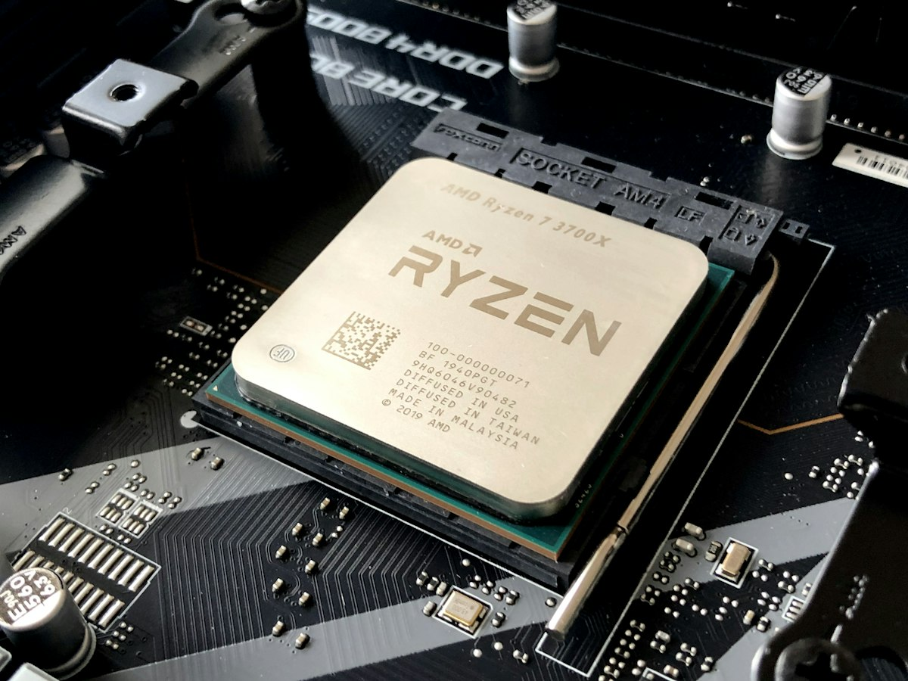
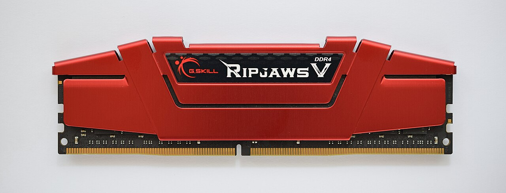
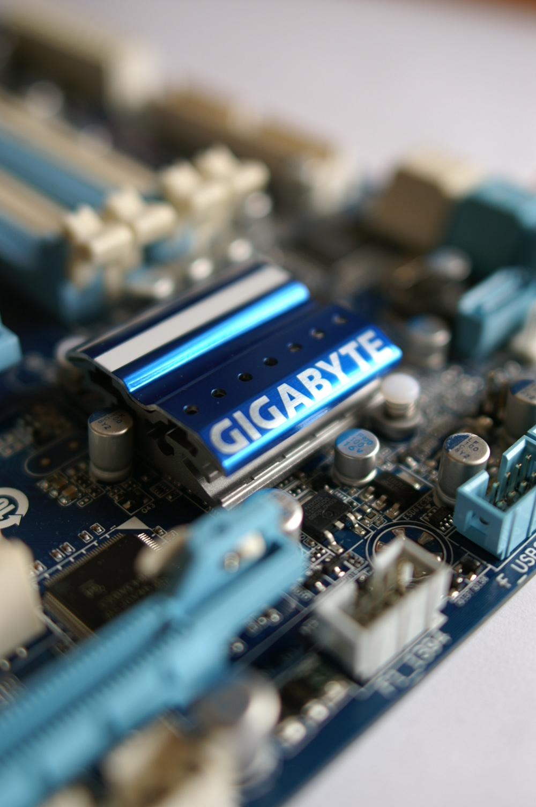
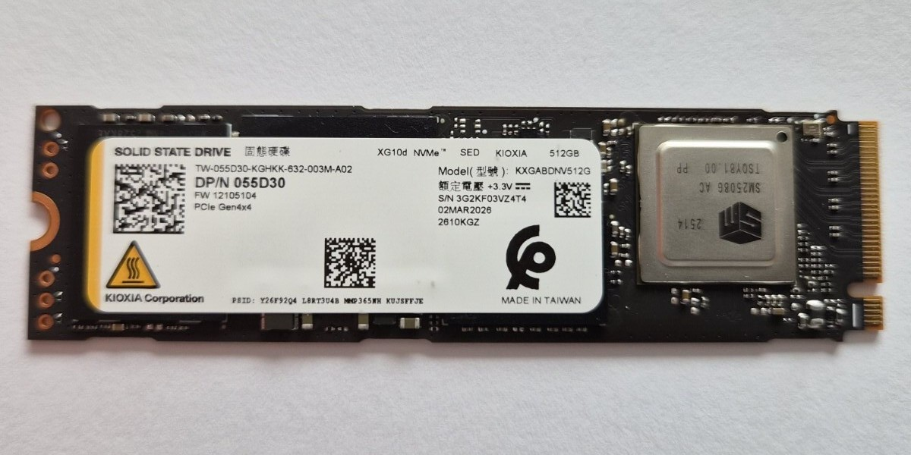
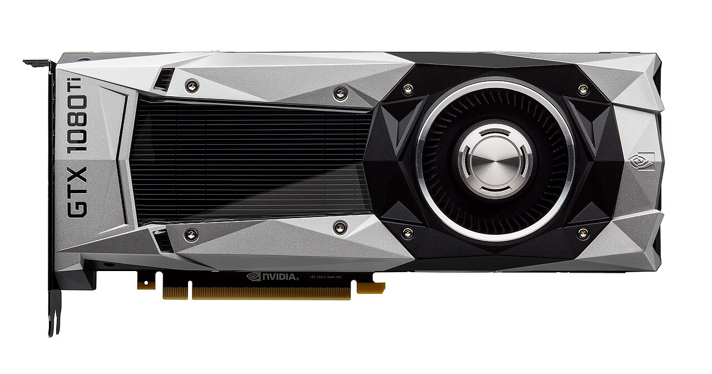
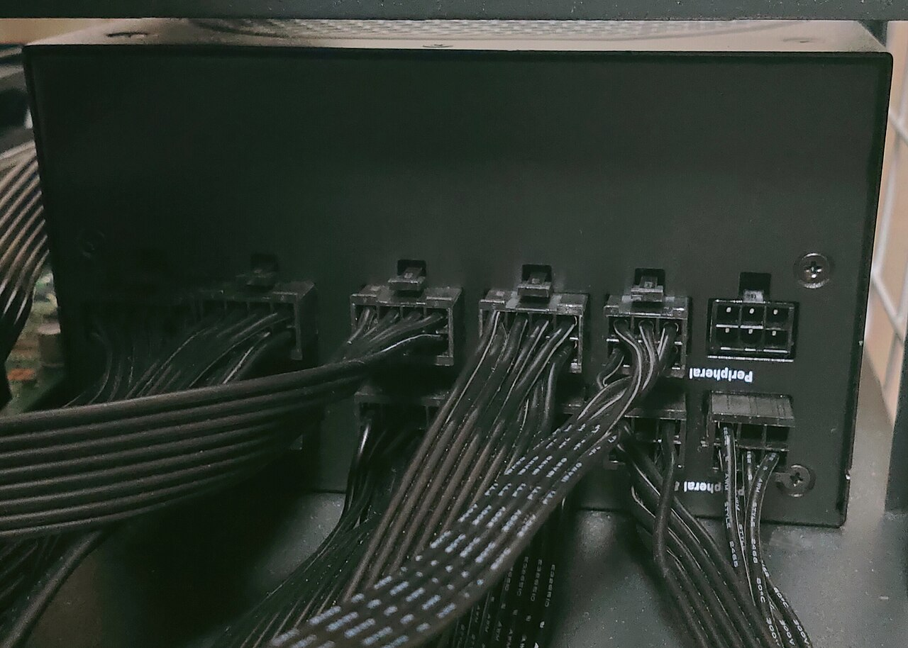
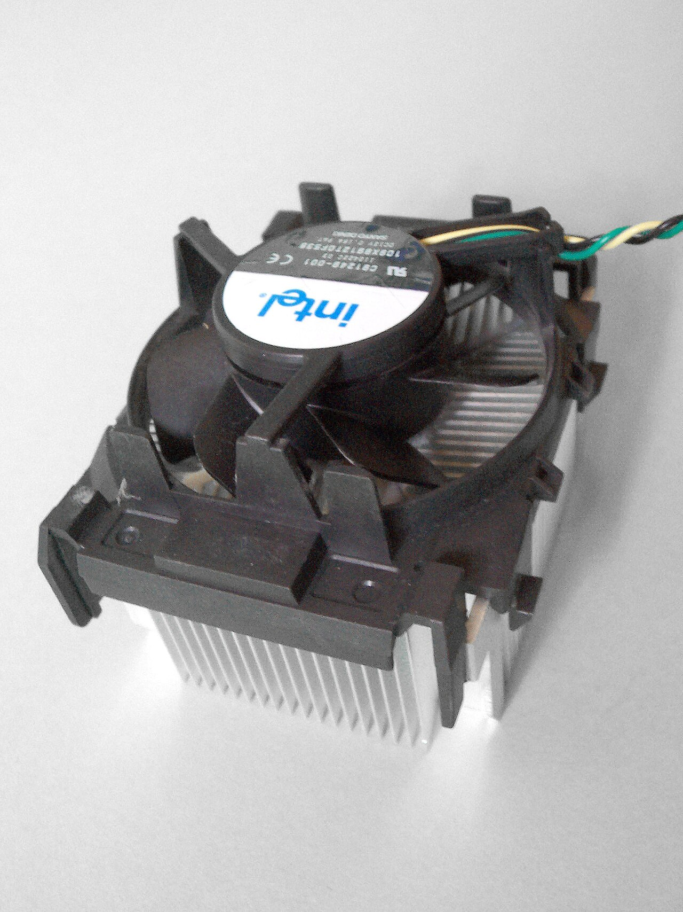
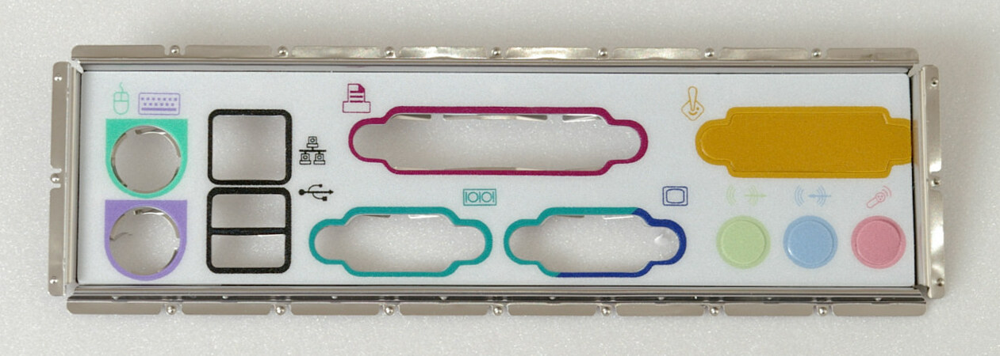

Internal Hardware
Parts inside the case do processing, memory, storage, power, and cooling. Examples include the CPU, RAM, motherboard, SSD, GPU, and power supply.
Computer Hardware Architecture • Introduction to Technology
Hardware is the physical equipment inside and around a computer. Chips, boards, drives, and cables do the work that software describes. This guide covers the core internal parts, how they cooperate in the IPOS cycle, and how they connect to software and input and output devices.
The Basics
If software is a set of instructions, hardware is the machine that carries them out. You can touch hardware. You cannot touch an app, an operating system, or a file except as it appears through hardware such as a screen or a drive.
Parts inside the case do processing, memory, storage, power, and cooling. Examples include the CPU, RAM, motherboard, SSD, GPU, and power supply.
Devices outside the case let people send information in and receive results. Keyboards, mice, monitors, printers, and speakers are covered on the I/O Devices page.
Neither side is useful alone. Hardware without software is idle metal. Software without hardware has nowhere to run. They meet through the operating system, drivers, and the system bus.
Inside the Computer
These components appear in desktops, laptops, and many other computers, even when they are soldered onto one board instead of looking like separate cards.

The central processing unit is the computer’s main calculator and decision-maker. It fetches instructions from memory, decodes them, and executes them millions or billions of times per second.

Random-access memory is short-term working space. Open apps, browser tabs, and the files you are editing live here so the CPU can reach them quickly. RAM is volatile: contents disappear when power is off.

The motherboard is the main circuit board. It connects the CPU, RAM, storage, GPU, power, and ports so they can exchange data. Chipset, sockets, and slots decide which parts can be installed.

Long-term storage keeps the operating system, apps, photos, and school files after the computer is turned off. SSDs use flash memory and are usually faster and more shock-resistant. HDDs use spinning magnetic platters and often cost less per gigabyte.

The graphics processing unit turns data into images for the monitor. Dedicated GPUs sit on their own card; integrated GPUs share the CPU package. Modern GPUs also help with video, 3D, and some AI tasks.

A desktop power supply unit (PSU) converts wall AC power into the DC voltages the motherboard, CPU, GPU, and drives need. Laptops use a brick charger plus an internal battery that stores energy for portable use.

Processors and GPUs produce heat. Fans, heatsinks, heat pipes, and sometimes liquid cooling move that heat away so chips stay within safe temperatures. Dust and blocked vents reduce cooling and can cause thermal throttling.

Ports and slots are how internal hardware talks to the outside world and to extra cards. USB, HDMI, DisplayPort, Ethernet, audio jacks, and PCIe slots are common. They are the physical link between this page and the I/O devices page.
The IPOS Cycle
Every task follows a loop: input, process, output, and storage. Internal hardware sits in the middle of that loop. Peripherals capture and present information; the CPU, RAM, storage, and GPU do the work in between.
A keyboard, mouse, mic, or network packet sends data through a port to the motherboard.
Needed files and instructions are copied from storage into RAM so the CPU can reach them quickly.
The CPU fetches, decodes, and executes instructions. The GPU may help with graphics or parallel work.
Results go to a monitor, speakers, printer, or network so a person (or another system) can use them.
If you save your work, RAM contents are written to SSD or HDD so they survive a shutdown.
Quick Reference
A compact map of the eight internal parts in this study.
| Component | Category | Description | Importance | Key Metric |
|---|---|---|---|---|
| 🧠 CPU | Processing | Fetches, decodes, and executes software instructions; coordinates all computer subsystems. | Central "brain" of the computer; no operating system or application can run without it. | Cores, GHz, cache |
| ⚡ RAM | Memory | High-speed volatile working memory holding active applications and in-progress data. | Provides CPU instant access to live data; essential for responsive multitasking. | Capacity (GB), speed |
| 🧩 Motherboard | System | Main printed circuit board interconnecting CPU, memory, storage, expansion, and power. | Central backbone; allows all internal chips and external devices to communicate. | Socket, slots, form factor |
| 💾 Storage (SSD/HDD) | Storage | Non-volatile flash or magnetic drive that permanently stores files and the operating system. | Retains files and system data permanently across reboots; required to load an OS. | TB capacity, NVMe/SATA speed |
| 🎮 GPU | Processing | Massively parallel processor dedicated to rendering frames, video, and 3D graphics. | Offloads graphics workloads from the CPU; drives monitor displays and visual rendering. | VRAM, outputs, TDP |
| 🔋 Power Supply | System | Converts wall AC electricity into stable, regulated low-voltage direct current (DC). | Energizes all internal hardware; clean, stable power prevents crashes and component burnout. | Watts, efficiency rating |
| ❄️ Cooling | System | Heatsinks, fans, and thermal materials that dissipate excess heat away from processors. | Prevents thermal throttling, system crashes, and permanent heat damage to silicon. | Temperature, airflow, RPM |
| 🔌 Ports & Expansion | System | External I/O ports (USB, HDMI, LAN) and internal PCIe expansion slots. | Gateway for peripherals, external displays, networks, and modular expansion cards. | USB / HDMI standard, PCIe lanes |
Responsible Use
Simple habits protect both the machine and the person using it.
Keep vents clear. Use a hard, flat surface for laptops. Dust buildup and blocked fans raise temperatures and shorten component life.
Use surge protection when you can. Unplug carefully. Do not force connectors. Liquid and open drinks near keyboards and ports are a common cause of damage.
Drives fail. Keep copies of important schoolwork in more than one place, such as a trusted cloud account plus another drive or computer.
Power down, unplug, and discharge static before opening a case. If you are unsure, ask for help rather than forcing a part that does not fit.